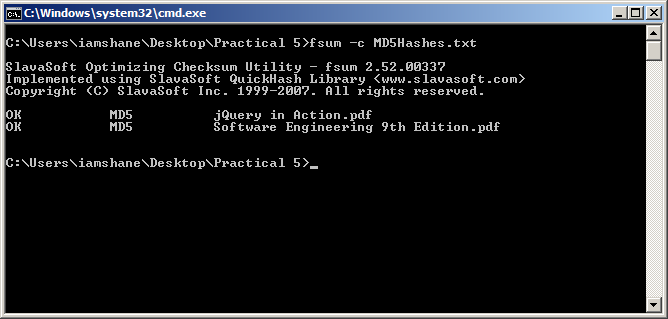
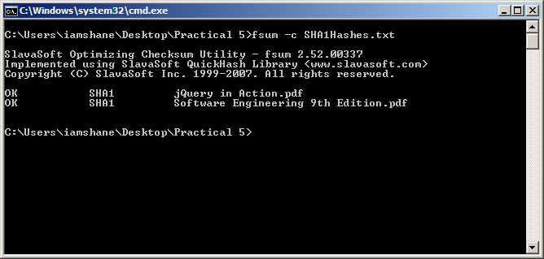
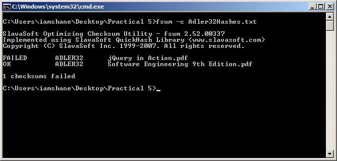

In this section I will be seeing how the three hash functions perform when generating a hash function for two PDF files. The files that were used had an overall size of 27.1mb and below are those files.
MD-5
Firstly I was going to get the MD-5 hash values for both books and this can be accomplished by running the following command. fsum -md5 *.pdf> MD5Hashes and it instantly produced a 128 bit hash value for each of the books which can be seen below.
6e7abe112a72b0f2ed3ca8e9733b1801 *jQuery in Action.pdf
ca148588f264be83bee5df58f9bb10e6 *Software Engineering 9th Edition.pdf
Next I wanted to verify the integrity of the hash value and to prove that it should still work as a long as the files or hash values had not changed. The screenshot below shows the command that was used and the result which was as expected.
SHA-1
Next I was going to get the SHA-1 hash values for both books and this can be accomplished by running the following command. fsum –sha1 *.pdf> SHA1Hashes and it instantly produced a 160 bit hash value for each of the books which can be seen below.
c846224851259074bbd1105abca434c58a3bad87 ?SHA1*jQuery in Action.pdf
ad0f6839974539b141e05021a1378091fdcbcccf ?SHA1*Software Engineering 9th Edition
Next I wanted to verify the integrity of the hash value and to prove that it should still work as a long as the files or hash values had not changed. The screenshot below shows the command that was used and the result which was as expected.
Adler-32
Finally I was to get the Adler-32 hash values for both books and this can be accomplished by running the following command. fsum -adler *.pdf> Adler32Hashes and it instantly produced a hash value for each of the books which can be seen below.
a92fcf96 ?ADLER32*jQuery in Action.pdf
f20f7bba ?ADLER32*Software Engineering 9th Edition.pdf
This time to prove that by changing either one of the hash values or content in the books would result in verification failing so I changed the hash value for the first book. The screenshot below shows the command that I ran and the results which show that the first book failed the test because the hash value did match the one that is created from the hash function.
Hash Value Files
Reference
All the information used in this website has been sourced from the following locations:
An Illustrated Guide to Cryptographic Hashes. 2011. An Illustrated Guide to Cryptographic Hashes. [ONLINE] Available at: http://unixwiz.net/techtips/iguide-crypto-hashes.html. [Accessed 24 November 2011].
Bruce Schneier, 1995. Applied Cryptography: Protocols, Algorithms, and Source Code in C, 2nd Edition. 2 Edition. Wiley.